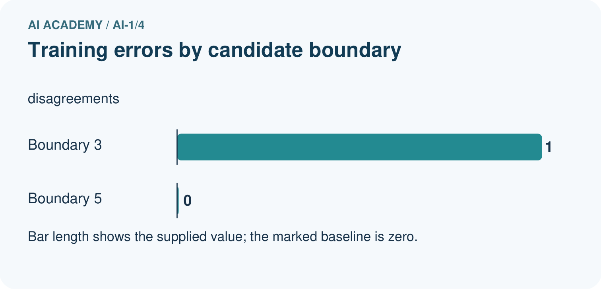
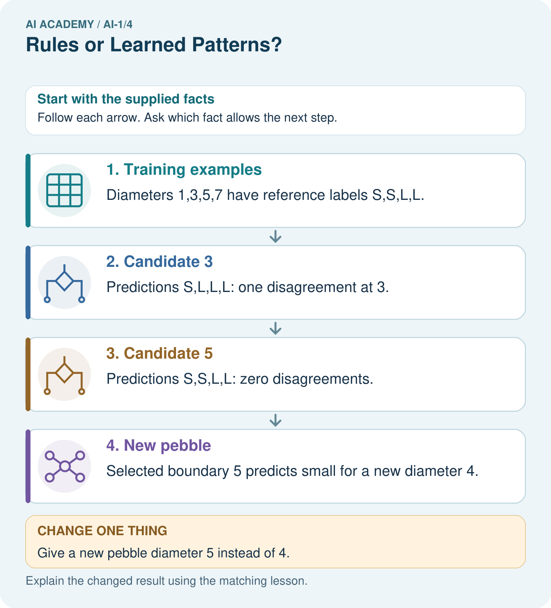

AI Academy · Level 1 · Grade 6 · Week 4 · Workbook
Rules or Learned Patterns?
Learn to understand, design, build, test and explain AI systems responsibly.
Project: Helpful Classroom Sorter
Workbook · 1 of 19
Recall and choose your starting point
Try the recall before opening notes. Then use a different colour or a labelled second line to correct your explanation.
Sensors Are Messengers
Without opening the old lesson, explain one key idea from Sensors Are Messengers. Give an example and a mistake that the idea helps you avoid.
AI or Not?
Without opening the old lesson, explain one key idea from AI or Not?. Give an example and a mistake that the idea helps you avoid.
Workbook · 2 of 19
Practise with fading help
Use W2: Complete the supported comparison for Rules and learned patterns. Record the answer once; the lesson and workbook refer to the same attempt.
| Given inputs | Procedure I chose | Middle steps | Result and check |
|---|---|---|---|
Workbook · 3 of 19
Individual reasoning check
Use the worked case for Rules and learned patterns. Proposed explanation: “A learned rule cannot be written simply”. Decide whether this explanation is supported. Point to the step or supplied fact that decides; explain your repair if needed.
Workbook · 4 of 19
Independent transfer case
Independent case: Fit a new paper classifier
A fictional sorting task has lengths 2, 5, 7, 9 cm with labels short, short, long, long. Candidate rules predict long when length is at least 5 or at least 7. List predictions and errors for both, choose one, and predict a new length of 6 before any label is revealed. State one limit of your conclusion.
Attempt this case before feedback. Record any help. Earlier examples below are further practice; a case already practised with feedback cannot establish fresh transfer.
Workbook · 5 of 19
Your learning target
Sorter A follows 'red left, blue right'. Sorter B was trained using labelled red and blue cards. Both send a purple card left. Does their shared output show that they used the same process? What evidence is missing?
Workbook · 6 of 19
Solve the given case
Sorter A follows a written red-card-left rule. Sorter B is fitted using labelled leaves.
How were their decision processes obtained? Where should A send blue cards?
Show your trace, calculation or evidence
Workbook · 7 of 19
Check a changed case
System A uses the written rule green means go. System B learns fruit labels from example photographs. Who supplies A's rule? What changes when B is trained on different examples?
My independent answer and reason
Week 4 Test and reflect
Workbook · 8 of 19
Design a revealing test
Create a changed input, boundary case or missing-information case. Write the expected answer or safe response before testing.
| Test record | My evidence |
|---|---|
| Changed input or condition | |
| Expected answer or fallback | |
| Observed result | |
| Why the result occurred |
Workbook · 9 of 19
Project checkpoint
Draw a fixed-rule version and a learned-pattern version of the Classroom Sorter; state what evidence would justify the learned version.
The project change and evidence I will keep
Workbook · 10 of 19
Self check
I can explain the mechanism. I can show evidence. I can handle a changed case. I can name a limit. Mark each as not yet, with help or independently, and attach supporting work.
Teacher review ____________________ Next step ____________________
Workbook · 11 of 19
Transfer practice from the original programme
Sorter A follows 'red left, blue right'. Sorter B was trained using labelled red and blue cards. Both send a purple card left. Does their shared output show that they used the same process? What evidence is missing?
Record support used: none, hint or teacher explanation.
Workbook · 12 of 19
W1 Execute before fitting
Use wide when width is at least 5 cm. Predict the label for widths 4, 5 and 6. Then state what changes if the rule uses greater than 5 instead.
Workbook · 13 of 19
W2 Complete the supported comparison
Widths 1, 3, 5, 7 have labels narrow, narrow, wide, wide. For candidates 3 and 5, list all predictions using wide when width is at least the candidate. Count disagreements and select the lower-error candidate.
Workbook · 14 of 19
W3 Make a tie visible
For the worked widths 2, 4, 6, 8 with labels narrow, narrow, wide, wide, compare thresholds 5 and 6. Give a width where they predict differently. Explain why the four fitting examples cannot decide that case.
Workbook · 15 of 19
W4 Fit a new paper classifier
A fictional sorting task has lengths 2, 5, 7, 9 cm with labels short, short, long, long. Candidate rules predict long when length is at least 5 or at least 7. List predictions and errors for both, choose one, and predict a new length of 6 before any label is revealed. State one limit of your conclusion.
Workbook · 16 of 19
W5 Keep the check honest
A learner sees that their final-check card was predicted incorrectly, changes the threshold to match it and reports the same card as an unseen test. Explain the problem and propose a valid next check.
Workbook · 17 of 19
Feedback, return check and learning record
| Evidence | My record |
|---|---|
| Worked alone / hint / model | |
| First step I repaired and why | |
| New case checked later; date and result | |
| What I can now explain without notes | |
| One remaining question |
Revisit this idea with your teacher after a delay. Familiarity is different from explaining and using it on a changed case.
Workbook · 18 of 19
Pictorial case practice: Rules or Learned Patterns?
A fictional paper sorter learns a size boundary for toy pebbles.
Training diameters are 1,3,5,7 cm with labels small,small,large,large.
Compare large-at-least-3 with large-at-least-5; choose fewer errors.


Show which stage used labels and which stage used only the new measurement.
Support used: alone / hint / worked example. This record is practice evidence.
Project connection: Document whether the sorter’s rules were teacher-written or chosen from examples, retaining candidate errors.
Workbook · 19 of 19
Project portfolio milestone
Project: Helpful Classroom Sorter
Current milestone: Frame the need. Name the user, the problem, allowed inputs and a safe simple starting method.
Document whether the sorter’s rules were teacher-written or chosen from examples, retaining candidate errors.
| Evidence to keep | My record |
|---|---|
| This week’s input and deciding step | |
| Prediction and actual result (or labelled paper trace) | |
| One change since the previous checkpoint and why | |
| One error or limit and the next test |